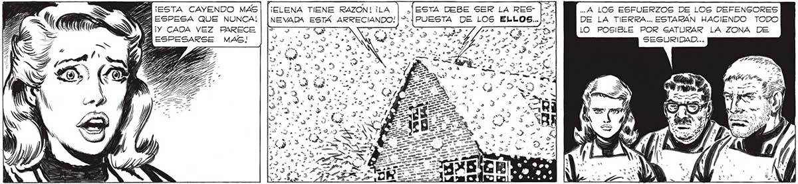
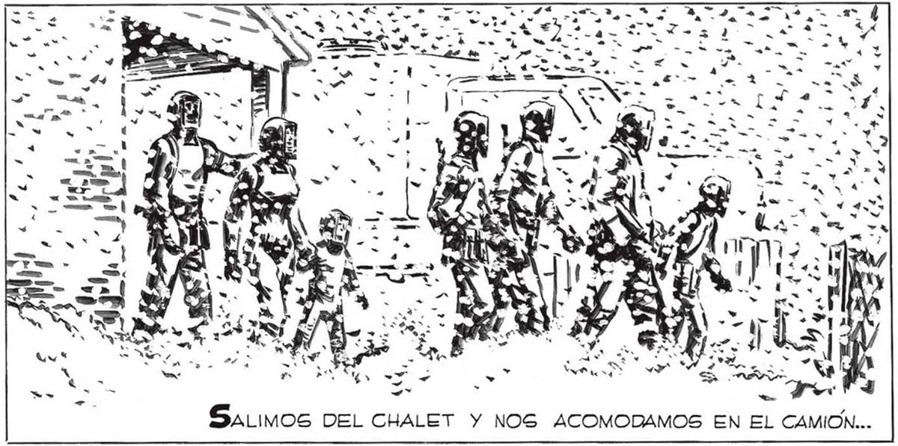

330 ¿COMO HAREMOS PARA SABER SI LAS ZONAS DE | SEGURIDAD RESISTEN? ¿COMO HAREMOS PARA SABER [B Gl LAS DEFENSAS SON CA- E PACES DE NEUTRALIZAR f SEMEJANTE NEVADA? A fA4 LO MEJOR HAREMOS EL E VIAJE DE BALDE.. GE Z Y Y, SaLimos DEL CHALET Y NOS ACOMODAMOS EN EL CAMION... ... A LOS ESFUERZOS DE LOS DEFENSORES DE LA TIERRA... ESTARÁN HACIENDO TODO LO POSIBLE POR SATURAR LA ZONA DE SEGURIDAD... A Po "€ es A 4 sy PR pe Eo si 4 A » z AN 224 ES UN RIEGO QUE TENEMOS QUE CORRER...DE TODOS MODOS CUANTO ANTES LLEGUEMOS A PERGAMINO MEJOR... ALLI ENCONTRAREMOS GENTE DEL COMITE UNIDO DE EMERGENCIA... LES PODREMOS COMUNICAR TODO LO QUE HEMOS AVERIGUADO... Era póco Lo que RESTABA CARGAR EN EL CAMION. FRANCO CARGO SU METRALLETA Y LOS DEMAS LE IMITAMOS... ... FUERA NUESTRO HOGAR. PERO ELE:NA NO NECESITABA MIRAR CON LOS OJOS PARA VER.. PASO LA MANO POR LA CERCA, COMO ACARICIANDOLA... . La ÚNICA QUE MIRO HACIA ATRAS FUE ELENA..LA NEVADA ERA UN VELO QUE OCULTABA YA EL QUE DURANTE TANTOS AÑOS...

